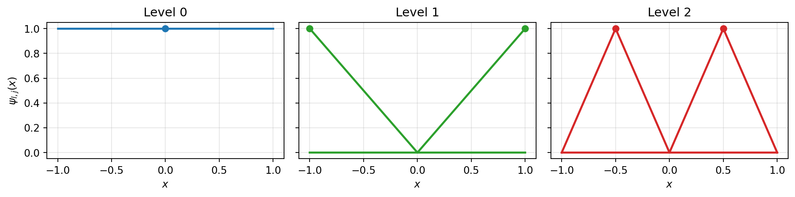
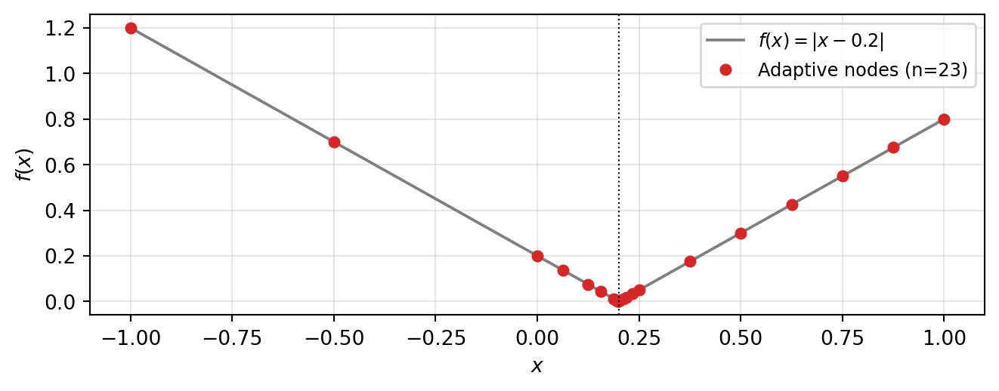
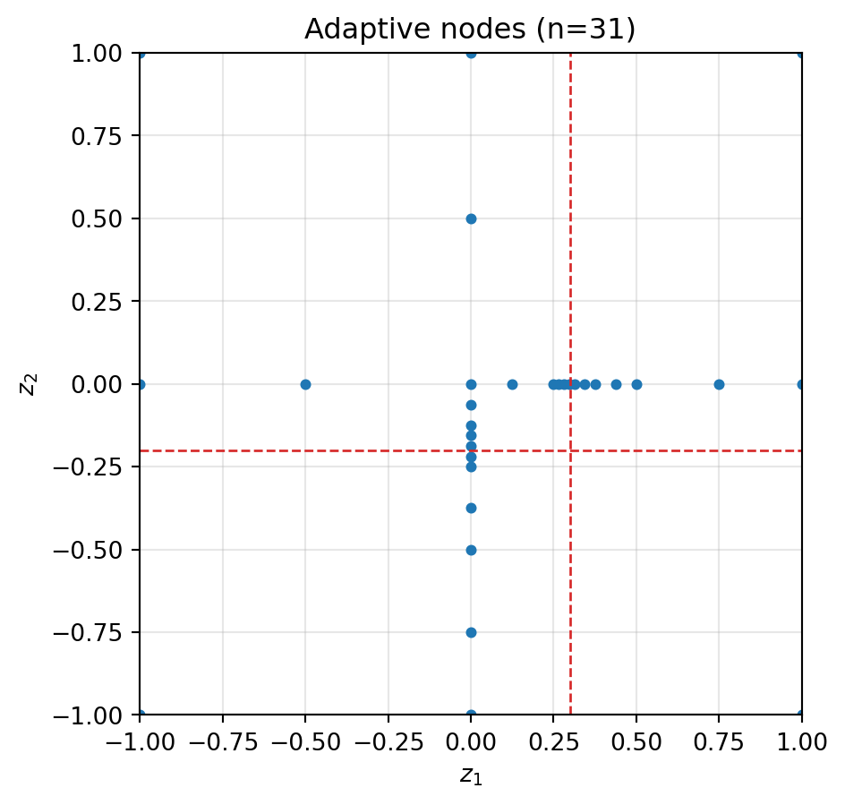

boundary_mode='include'. Level 0 places a single hat at the midpoint; level 1 adds boundary hats; level 2 adds two interior midpoint hats. Each level halves the support of the new functions.
PyApprox Tutorial Library
After completing this tutorial, you will be able to:
SingleFidelityHierarchicalFitter for a basic 2D problemboundary_mode and admissibility criteria for a given problemComplete Adaptive Sparse Grids and Local Basis Sparse Grids first. Those tutorials cover the combination technique with global Lagrange and piecewise polynomial bases respectively. This tutorial introduces a fundamentally different construction.
The combination technique tutorials select subspaces based on a dimension-level error indicator. Within a chosen subspace every node is added; the algorithm cannot place extra points near a feature at \(z_1 = -0.3\) while leaving the rest of \(z_1\) coarse. This is dimension adaptivity.
A locally adaptive sparse grid stores a hierarchy of points directly. Each point carries a surplus measuring how much it contributes to the surrogate. Refinement adds the children of the single point with the largest surplus, regardless of which dimension or subspace it lives in. Points cluster wherever the function is hard to approximate.
| Aspect | Combination technique | Locally adaptive |
|---|---|---|
| Refinement unit | Subspace (level multi-index) | Single point |
| Indicator | Subspace contribution | Per-point surplus |
| Best for | Smooth, anisotropic | Localised features (kinks, jumps, bumps) |
| API | IsotropicSparseGridFitter, SingleFidelityAdaptiveSparseGridFitter |
SingleFidelityHierarchicalFitter |
PyApprox uses a hierarchical hat-function basis on each dimension. Level 0 has a single node at the centre; level 1 (with boundary_mode="include") adds the two boundary nodes; each higher level \(l\) inserts \(2^{l-1}\) new midpoints between existing nodes. The 1D surrogate on \([a, b]\) is
\[ \hat f(x) \;=\; \sum_{l=0}^{L}\sum_{j\,\text{new at }l} v_{l,j}\,\psi_{l,j}(x), \]
where \(v_{l,j} = f(x_{l,j}) - \hat f_{<l}(x_{l,j})\) is the hierarchical surplus: the residual of the surrogate built from all coarser levels. A small surplus means the coarser surrogate already captures the function at \(x_{l,j}\), so refining there is unproductive.

boundary_mode='include'. Level 0 places a single hat at the midpoint; level 1 adds boundary hats; level 2 adds two interior midpoint hats. Each level halves the support of the new functions.
Surpluses inherit the size of the local function variation: where \(f\) is smooth they decay rapidly with level; where \(f\) has a kink or jump they decay slowly. The greedy algorithm always refines the largest- surplus point next, so points cluster automatically near non-smooth features.

import numpy as np
import matplotlib.pyplot as plt
from pyapprox.util.backends.numpy import NumpyBkd
from pyapprox.surrogates.sparsegrids.basis.hierarchical_basis_1d import (
HierarchicalBasis1D,
)
from pyapprox.surrogates.sparsegrids.hierarchical.hierarchical_fitter import (
SingleFidelityHierarchicalFitter,
)
from pyapprox.surrogates.affine.indices.admissibility import (
MaxLevelCriteria,
)
from pyapprox.interface.functions.fromcallable.function import (
FunctionFromCallable,
)
bkd = NumpyBkd()
np.random.seed(0)A locally adaptive surrogate is built from three ingredients: a list of 1D hierarchical bases (one per dimension), an admissibility criterion, and a fitter that drives the refinement loop.
def f_corner(samples):
"""Smooth elsewhere, kinked along x=0.3 and y=-0.2."""
z1, z2 = samples[0], samples[1]
return bkd.reshape(bkd.abs(z1 - 0.3) + 0.5 * bkd.abs(z2 + 0.2), (1, -1))
bases_1d = [
HierarchicalBasis1D(bkd, bounds=(-1.0, 1.0), p_max=1,
boundary_mode="include"),
HierarchicalBasis1D(bkd, bounds=(-1.0, 1.0), p_max=1,
boundary_mode="include"),
]
admissibility = MaxLevelCriteria(max_level=10, pnorm=1.0, bkd=bkd)
fitter = SingleFidelityHierarchicalFitter(
bkd, bases_1d, admissibility, batch_size=1,
)
result = fitter.refine_to_tolerance(
FunctionFromCallable(1, 2, f_corner, bkd),
tol=1e-3, max_steps=300,
)
mean_val = float(bkd.to_numpy(result.surrogate.mean())[0])
print(f"Selected {result.nsamples} points; mean ≈ {mean_val:.4f}")Selected 31 points; mean ≈ 3.2203
The fitter enforces downward closure by default: when refining a point, children are only spawned in directions where the backward-neighbour subspace is already complete. For an anisotropic function this is efficient — refinement concentrates in the directions already deemed important and avoids wasting evaluations in unimportant dimensions. Without downward closure every refined point spawns children in all \(d\) directions, which is wasteful when the function varies primarily along a subset of dimensions.
An admissibility criterion is a separate, composable constraint that bounds which subspace levels the algorithm may visit. Two are provided:
| Criterion | Effect | When to use |
|---|---|---|
MaxLevelCriteria(L, pnorm=1.0) |
Rejects any subspace whose \(\ell_p\)-norm exceeds \(L\). | Always — controls maximum resolution. |
AlwaysAdmissible() |
Accepts every subspace level. | When you want the level cap to come only from the budget (max_steps / max_pts). |
Either criterion can be combined with the fitter’s downward-closure enforcement. Both produce surrogates that interpolate \(f\) at every grid node; they differ in which nodes get selected, not in correctness.
HierarchicalBasis1D accepts boundary_mode="include" or "exclude". Use include when \(f\) is nonzero or unconstrained at the domain boundary (the typical UQ setting). Use exclude when \(f\) vanishes at the boundary (e.g. solutions to PDEs with homogeneous Dirichlet data); the surrogate will then evaluate to zero on the boundary by construction and uses fewer nodes.
HierarchicalBasis1D (one per dimension), a basis degree (p_max=1 or 2), a boundary_mode, an admissibility criterion (e.g. MaxLevelCriteria), and optionally downward_closed=False to disable downward closure.step_samples() / step_values() loop or the convenience refine_to_tolerance(FunctionFromCallable(...)) wrapper.f_corner with the smooth \(\cos(\pi z_1)\cos(\pi z_2/2)\). How many nodes does the locally adaptive grid need to reach the same accuracy as IsotropicSparseGridFitter from the Local Basis tutorial? Which method wins on a smooth target, and why?downward_closed=False in the fitter constructor. Plot the point distributions side by side. Where does the difference appear visually?p_max=2 and rerun. Quadratic local bases are exact on local quadratics; explain why the point count drops on the smooth regions of f_corner but barely changes on the kink lines.---
title: "Locally Adaptive Sparse Grids: Spatial Refinement"
subtitle: "PyApprox Tutorial Library"
description: "Hierarchical hat-function surrogates that place new points exactly where the function is hardest to approximate."
tutorial_type: concept
topic: surrogate_modeling
difficulty: intermediate
estimated_time: 10
prerequisites:
- adaptive_sparse_grids
- local_basis_sparse_grids
tags:
- surrogate
- sparse-grid
- local-adaptive
- hierarchical
format:
html:
code-fold: false
code-tools: true
toc: true
execute:
echo: true
warning: false
jupyter: python3
---
::: {.callout-tip collapse="true"}
## Download Notebook
[Download as Jupyter Notebook](notebooks/local_adaptive_sparse_grids_concept.ipynb)
:::
## Learning Objectives
After completing this tutorial, you will be able to:
- Distinguish *dimension* adaptivity (combination technique) from *local* (spatial) adaptivity
- Explain how hierarchical surpluses drive point-by-point refinement
- Use `SingleFidelityHierarchicalFitter` for a basic 2D problem
- Choose between `boundary_mode` and admissibility criteria for a given problem
## Prerequisites
Complete [Adaptive Sparse Grids](adaptive_sparse_grids.qmd) and
[Local Basis Sparse Grids](local_basis_sparse_grids.qmd) first. Those
tutorials cover the combination technique with global Lagrange and
piecewise polynomial bases respectively. This tutorial introduces a
fundamentally different construction.
## Two Kinds of Adaptivity
The combination technique tutorials select **subspaces** based on a
dimension-level error indicator. Within a chosen subspace every
node is added; the algorithm cannot place extra points near a feature
at $z_1 = -0.3$ while leaving the rest of $z_1$ coarse. This is
**dimension adaptivity**.
A locally adaptive sparse grid stores a **hierarchy of points**
directly. Each point carries a *surplus* measuring how much it
contributes to the surrogate. Refinement adds the children of the
single point with the largest surplus, regardless of which dimension
or subspace it lives in. Points cluster wherever the function is hard
to approximate.
| Aspect | Combination technique | Locally adaptive |
|---|---|---|
| Refinement unit | Subspace (level multi-index) | Single point |
| Indicator | Subspace contribution | Per-point surplus |
| Best for | Smooth, anisotropic | Localised features (kinks, jumps, bumps) |
| API | `IsotropicSparseGridFitter`, `SingleFidelityAdaptiveSparseGridFitter` | `SingleFidelityHierarchicalFitter` |
## Hierarchical Surplus Basis
PyApprox uses a hierarchical hat-function basis on each dimension.
Level 0 has a single node at the centre; level 1 (with
`boundary_mode="include"`) adds the two boundary nodes; each higher
level $l$ inserts $2^{l-1}$ new midpoints between existing nodes.
The 1D surrogate on $[a, b]$ is
$$
\hat f(x) \;=\; \sum_{l=0}^{L}\sum_{j\,\text{new at }l} v_{l,j}\,\psi_{l,j}(x),
$$
where $v_{l,j} = f(x_{l,j}) - \hat f_{<l}(x_{l,j})$ is the
**hierarchical surplus**: the residual of the surrogate built from
all coarser levels. A small surplus means the coarser surrogate
already captures the function at $x_{l,j}$, so refining there is
unproductive.
```{python}
#| echo: false
#| fig-cap: "Hierarchical hat basis on $[-1,1]$ with `boundary_mode='include'`. Level 0 places a single hat at the midpoint; level 1 adds boundary hats; level 2 adds two interior midpoint hats. Each level halves the support of the new functions."
#| label: fig-hat-basis
import numpy as np
import matplotlib.pyplot as plt
from pyapprox.util.backends.numpy import NumpyBkd
from pyapprox.surrogates.sparsegrids.basis.hierarchical_basis_1d import (
HierarchicalBasis1D,
)
bkd = NumpyBkd()
basis = HierarchicalBasis1D(bkd, bounds=(-1.0, 1.0), p_max=1,
boundary_mode="include")
xx = np.linspace(-1, 1, 401)
xx_arr = bkd.asarray(xx)
fig, axes = plt.subplots(1, 3, figsize=(11, 2.8), sharey=True)
level_layout = [(0, [1]), (1, [0, 2]), (2, [1, 3])]
colors = ["#1F77B4", "#2CA02C", "#D62728"]
for ax, (lev, indices), col in zip(axes, level_layout, colors):
for j in indices:
vals = bkd.to_numpy(basis.evaluate(xx_arr, lev, j))
ax.plot(xx, vals, color=col, lw=2)
node = basis.node(lev, j)
ax.plot(node, 1.0, "o", color=col, ms=6)
ax.set_title(f"Level {lev}")
ax.set_xlabel("$x$")
ax.grid(True, alpha=0.3)
axes[0].set_ylabel(r"$\psi_{l,j}(x)$")
fig.tight_layout()
plt.show()
```
## Refinement Where the Function Changes
Surpluses inherit the size of the local function variation: where $f$
is smooth they decay rapidly with level; where $f$ has a kink or jump
they decay slowly. The greedy algorithm always refines the largest-
surplus point next, so points cluster automatically near non-smooth
features.
```{python}
#| echo: false
#| fig-cap: "Local adaptive refinement of $f(x)=|x-0.2|$ on $[-1,1]$. Points cluster at the kink because surpluses there decay slowly; the smooth regions need only a handful of nodes."
#| label: fig-1d-clustering
from pyapprox.interface.functions.fromcallable.function import (
FunctionFromCallable,
)
from pyapprox.surrogates.sparsegrids.basis.hierarchical_basis_1d import (
HierarchicalBasis1D,
)
from pyapprox.surrogates.sparsegrids.hierarchical.hierarchical_fitter import (
SingleFidelityHierarchicalFitter,
)
from pyapprox.surrogates.affine.indices.admissibility import MaxLevelCriteria
def f_kink(x):
return bkd.abs(x - 0.2)
bases_1d = [HierarchicalBasis1D(bkd, bounds=(-1.0, 1.0), p_max=1,
boundary_mode="include")]
admis = MaxLevelCriteria(max_level=10, pnorm=1.0, bkd=bkd)
fitter = SingleFidelityHierarchicalFitter(bkd, bases_1d, admis, batch_size=1)
fitter.refine_to_tolerance(
FunctionFromCallable(1, 1, f_kink, bkd), tol=1e-6, max_steps=80,
)
nodes = bkd.to_numpy(fitter.get_samples()).ravel()
xx = np.linspace(-1, 1, 401)
yy = np.abs(xx - 0.2)
fig, ax = plt.subplots(figsize=(7, 2.8))
ax.plot(xx, yy, "-", color="#7F7F7F", lw=1.4, label=r"$f(x)=|x-0.2|$")
ax.plot(nodes, np.abs(nodes - 0.2), "o", color="#D62728",
ms=5, label=f"Adaptive nodes (n={len(nodes)})")
ax.axvline(0.2, color="k", ls=":", lw=0.8)
ax.set_xlabel("$x$"); ax.set_ylabel("$f(x)$")
ax.legend(fontsize=9, loc="upper right")
ax.grid(True, alpha=0.3)
fig.tight_layout()
plt.show()
```
## Setup
```{python}
import numpy as np
import matplotlib.pyplot as plt
from pyapprox.util.backends.numpy import NumpyBkd
from pyapprox.surrogates.sparsegrids.basis.hierarchical_basis_1d import (
HierarchicalBasis1D,
)
from pyapprox.surrogates.sparsegrids.hierarchical.hierarchical_fitter import (
SingleFidelityHierarchicalFitter,
)
from pyapprox.surrogates.affine.indices.admissibility import (
MaxLevelCriteria,
)
from pyapprox.interface.functions.fromcallable.function import (
FunctionFromCallable,
)
bkd = NumpyBkd()
np.random.seed(0)
```
## Basic 2D Usage
A locally adaptive surrogate is built from three ingredients: a list
of 1D hierarchical bases (one per dimension), an admissibility
criterion, and a fitter that drives the refinement loop.
```{python}
def f_corner(samples):
"""Smooth elsewhere, kinked along x=0.3 and y=-0.2."""
z1, z2 = samples[0], samples[1]
return bkd.reshape(bkd.abs(z1 - 0.3) + 0.5 * bkd.abs(z2 + 0.2), (1, -1))
bases_1d = [
HierarchicalBasis1D(bkd, bounds=(-1.0, 1.0), p_max=1,
boundary_mode="include"),
HierarchicalBasis1D(bkd, bounds=(-1.0, 1.0), p_max=1,
boundary_mode="include"),
]
admissibility = MaxLevelCriteria(max_level=10, pnorm=1.0, bkd=bkd)
fitter = SingleFidelityHierarchicalFitter(
bkd, bases_1d, admissibility, batch_size=1,
)
result = fitter.refine_to_tolerance(
FunctionFromCallable(1, 2, f_corner, bkd),
tol=1e-3, max_steps=300,
)
mean_val = float(bkd.to_numpy(result.surrogate.mean())[0])
print(f"Selected {result.nsamples} points; mean ≈ {mean_val:.4f}")
```
```{python}
#| echo: false
#| fig-cap: "2D point distribution after locally adaptive refinement of $|z_1-0.3|+0.5|z_2+0.2|$. Points cluster on the two kink lines and remain sparse in the smooth corners."
#| label: fig-2d-clustering
samples = bkd.to_numpy(fitter.get_samples())
fig, ax = plt.subplots(figsize=(5, 5))
ax.plot(samples[0], samples[1], "o", color="#1F77B4", ms=3.5)
ax.axvline(0.3, color="#D62728", ls="--", lw=1)
ax.axhline(-0.2, color="#D62728", ls="--", lw=1)
ax.set_xlim(-1, 1); ax.set_ylim(-1, 1)
ax.set_xlabel("$z_1$"); ax.set_ylabel("$z_2$")
ax.set_title(f"Adaptive nodes (n={samples.shape[1]})")
ax.set_aspect("equal"); ax.grid(True, alpha=0.3)
fig.tight_layout()
plt.show()
```
## Two Refinement Strategies
The fitter enforces **downward closure** by default: when refining
a point, children are only spawned in directions where the
backward-neighbour subspace is already complete. For an anisotropic
function this is efficient — refinement concentrates in the
directions already deemed important and avoids wasting evaluations
in unimportant dimensions. Without downward closure every refined
point spawns children in *all* $d$ directions, which is wasteful
when the function varies primarily along a subset of dimensions.
An **admissibility criterion** is a separate, composable constraint
that bounds *which* subspace levels the algorithm may visit. Two
are provided:
| Criterion | Effect | When to use |
|---|---|---|
| `MaxLevelCriteria(L, pnorm=1.0)` | Rejects any subspace whose $\ell_p$-norm exceeds $L$. | Always — controls maximum resolution. |
| `AlwaysAdmissible()` | Accepts every subspace level. | When you want the level cap to come only from the budget (`max_steps` / `max_pts`). |
Either criterion can be combined with the fitter's downward-closure
enforcement. Both produce surrogates that interpolate $f$ at every
grid node; they differ in *which* nodes get selected, not in
correctness.
## Boundary Mode
`HierarchicalBasis1D` accepts `boundary_mode="include"` or `"exclude"`.
Use **include** when $f$ is nonzero or unconstrained at the domain
boundary (the typical UQ setting). Use **exclude** when $f$ vanishes
at the boundary (e.g. solutions to PDEs with homogeneous Dirichlet
data); the surrogate will then evaluate to zero on the boundary by
construction and uses fewer nodes.
## Key Takeaways
- Local adaptivity refines **individual points** by hierarchical surplus magnitude; combination-technique adaptivity refines **whole subspaces** by aggregate indicators.
- Hierarchical surpluses naturally concentrate refinement near non-smooth features, so a localised kink or jump does not pollute the entire surrogate.
- The fitter is configured by a list of `HierarchicalBasis1D` (one per dimension), a basis degree (`p_max=1` or `2`), a `boundary_mode`, an admissibility criterion (e.g. `MaxLevelCriteria`), and optionally `downward_closed=False` to disable downward closure.
- Use the standard `step_samples()` / `step_values()` loop or the convenience `refine_to_tolerance(FunctionFromCallable(...))` wrapper.
## Exercises
1. Replace `f_corner` with the smooth $\cos(\pi z_1)\cos(\pi z_2/2)$. How many nodes does the locally adaptive grid need to reach the same accuracy as `IsotropicSparseGridFitter` from the [Local Basis](local_basis_sparse_grids.qmd) tutorial? Which method wins on a smooth target, and why?
2. Set `downward_closed=False` in the fitter constructor. Plot the point distributions side by side. Where does the difference appear visually?
3. Set `p_max=2` and rerun. Quadratic local bases are exact on local quadratics; explain why the point count drops on the smooth regions of `f_corner` but barely changes on the kink lines.
## Next Steps
- [Local Adaptivity vs Combination Technique](local_adaptive_vs_combination.qmd) — head-to-head benchmark on a discontinuous target function.